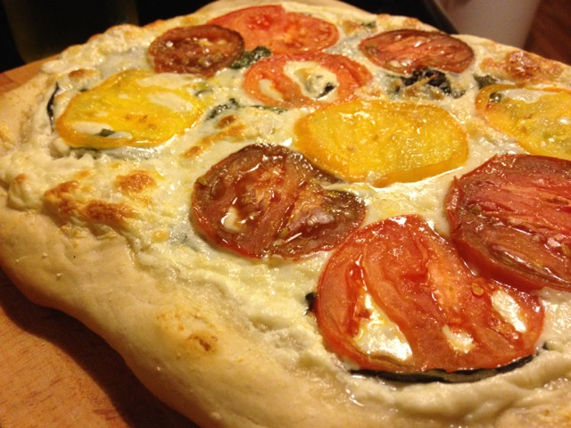
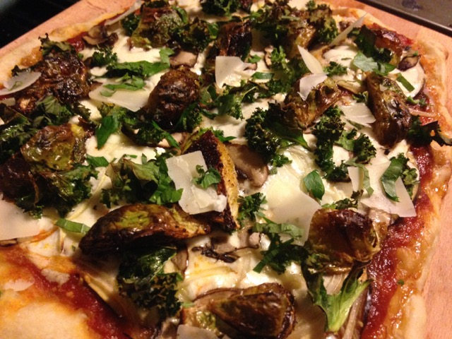
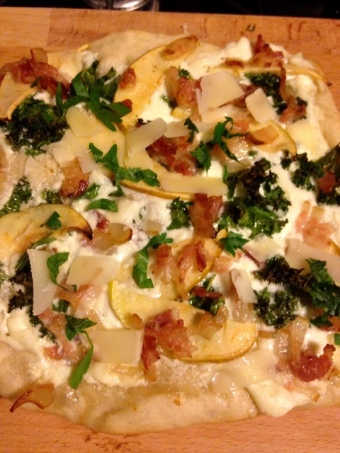
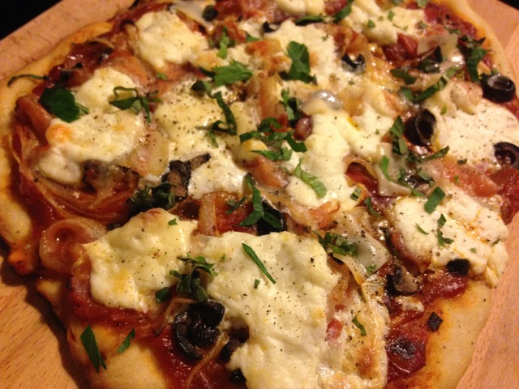

Pizza is one of my favorite things to make. It's fairly easy, and you have the freedom to get pretty creative with toppings. Here are some pizzas that I made recently:
White Pie: topped with colorful tomatoes and basil
Veggie Pie: Brussels sprouts, kale, mushrooms and eggplant
This-is-so-Brooklyn Pie: Kale, bacon, apple and garlic-infused ricotta
Pancetta, olives and onions: Self-explanatory
